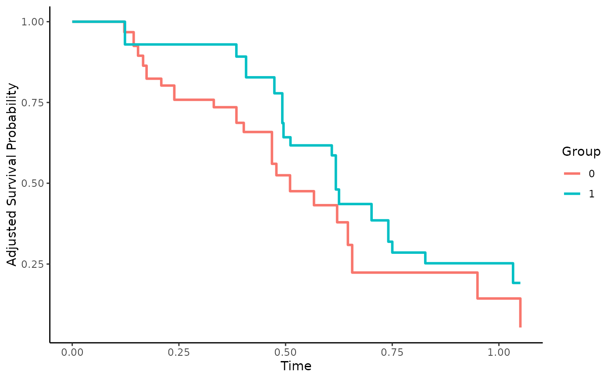

Empirical Likelihood Estimation Survival Curves
surv_emp_lik.RdThis page explains the details of estimating adjusted survival curves using the empirical likelihood estimation methodology introduced by Wang et al. (2019) for single event time-to-event data (method="emp_lik" in the adjustedsurv function). All regular arguments of the adjustedsurv function can be used. Additionally, the treatment_vars argument has to be specified in the adjustedsurv call. Further arguments specific to this method are listed below.
Arguments
- treatment_vars
[required] A character vector of column names specifying variables to be used as covariates in the empirical likelihood estimation. See details and examples.
- moment
A character string specifying which moment to adjust for. Can be either
"first"(default) or"second".- standardize
A logical variable indicating whether the
treatment_varsvariables should be standardized. Defaults toFALSE. See details.- gtol
A number specifying the tolerance for the weights. Is basically only used to avoid division by 0 errors in cases where the weights are estimated to be 0. Defaults to 0.00001.
- max_iter
Maximum number of iterations allowed in the newton-raphson algorithm. Set to 100 by default which is more than enough in most cases.
- newton_tol
Tolerance used in the newton-raphson algorithm. Set to 1.0e-06 by default which is more than enough in most cases.
Details
Type of Adjustment: Requires a character vector of variable names used to balance the distribution of covariates (treatment assignment mechanism)
Doubly-Robust: Estimates are not Doubly-Robust (see details).
Categorical groups: Only binary treatments are allowed. The column specified by
variablemust be a factor variable with exactly two levels.Approximate Variance: Calculations to approximate the variance and confidence intervals are not available. Bootstrapping can still be used to estimate the confidence intervals (see
?adjustedsurv).Allowed Time Values: Allows both continuous and integer survival times.
Bounded Estimates: Estimates are guaranteed to be bounded in the 0 to 1 probability range.
Monotone Function: Estimates are guaranteed to be monotone.
Dependencies: This method relies on the MASS package. While code from the adjKMtest package is used internally (see <https://github.com/kimihua1995/adjKMtest>) it is not necessary to install this package. The code is directly included in this R-Package. If you use this method, please cite the paper by Wang et al. (2019).
A non-parametric likelihood based method which does not require the researcher to assume that the data was generated by any known family of distributions. This method works by forcing the moments of the covariates to be equal between treatment groups, through the maximization of a constrained likelihood function. The resulting equality of the distributions removes the bias created by the confounders. This method was proposed by Wang et al. (2019). Since the exact form of both mechanisms are left unspecified, it is more robust to model misspecification than IPTW or direct adjustment.
The underlying method is theoretically doubly-robust as shown by Wang et al. (2019), but the specific implementation of this method implemented in this package is not as demonstrated in Denz et al. (2022). For example, if some confounder has a quadratic effect on the treatment-assignment but it is only passed to this function as a linear predictor (e.g. without squaring it) this method will produce asymptotically biased estimates.
References
Xiaofei Wang, Fangfang Bai, Herbert Pang, and Stephen L. George (2019). "Bias-Adjusted Kaplan-Meier Survival Curves for Marginal Treatment Effect in Observational Studies". In: Journal of Biopharmaceutical Statistics 29.4, pp. 592-605
Art B. Owen (2001). Empirical Likelihood. Boca Raton: CRC Press
Robin Denz, Renate Klaaßen-Mielke, and Nina Timmesfeld (2023). "A Comparison of Different Methods to Adjust Survival Curves for Confounders". In: Statistics in Medicine 42.10, pp. 1461-1479
Author
All functions used for the estimation were written by:
Fangfang Bai, PhD School of Statistics, University of International Business and Economics, Beijing, China.
and
Xiaofei Wang, PhD Department of Biostatistics and Bioinformatics, Duke University, Durham, NC, USA.
Robin Denz only performed small changes to that code (documented with code-comments in the source code) and wrote the wrapper function.
Examples
library(adjustedCurves)
set.seed(42)
if (requireNamespace("MASS")) {
# simulate some data as example
sim_dat <- sim_confounded_surv(n=50, max_t=1.2)
sim_dat$group <- as.factor(sim_dat$group)
# calculate adjusted survival curves
adjsurv <- adjustedsurv(data=sim_dat,
variable="group",
ev_time="time",
event="event",
method="emp_lik",
treatment_vars=c("x1", "x2", "x3", "x4", "x5", "x6"),
moment="first")
# plot the curves
plot(adjsurv)
}
#> Warning: Dichotomous variables coded with 0 and 1 found in 'treatment_vars'. Consider recoding to -1 and 1 to avoid estimation problems.
#> Warning: Dichotomous variables coded with 0 and 1 found in 'treatment_vars'. Consider recoding to -1 and 1 to avoid estimation problems.
#> Warning: Dichotomous variables coded with 0 and 1 found in 'treatment_vars'. Consider recoding to -1 and 1 to avoid estimation problems.
